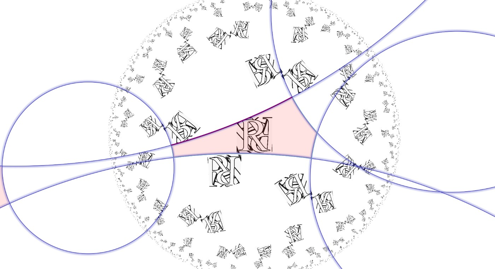

Orbifold Showcase
Thirty-plus symmetry groups worth visiting, from rigid triangle worlds to six-dimensional moduli monsters — each with its Euler characteristic $\chi$, the number of parameters you can drag, and what to watch while you drag them. Every entry has a Visualize button that opens the app in a popup with that symmetry already loaded.

Finding a handle, and what every gesture does
Getting in. Press any Visualize button below — it opens the app in a single reused popup with that symmetry already loaded. (Opening the app cold instead shows *442, which is Euclidean and therefore has nothing to drag; type a hyperbolic symbol or load a preset first.) To type a symbol yourself: gear icon → symmetry → group params → orbifold symbol, then press Enter. Multi-digit orders need parentheses, (12)3x.
Finding a draggable handle. The move tool — the four-arrows button, active by default — must be selected. Then glide the pointer slowly across the colored arcs. When you cross one that carries a parameter it lights up yellow and the cursor becomes a grab hand. That pair is the only reliable signal: color alone won't tell you, because red marks both the draggable fold/cornerPair and the inert mirrorRedundant, and pale blue cuttingEdges are never draggable. The hit zone is about 7 canvas pixels wide — on a Retina screen that is only 3–4 pixels of actual mouse travel, narrower than the stroke you see, so aim at the middle of the arc and move slowly.
| gesture | on a highlighted (yellow) edge | on empty space |
|---|---|---|
| drag | changes that edge's length — 0.005 per canvas pixel, clamped to 0.3…4.0. Right/up increases, left/down decreases. The point you grabbed stays pinned under the cursor. | pans the view |
| shift + drag | changes the twist — 0.002 per canvas pixel, wrapping at ±0.5. Only handle, conePair and tube edges have a twist; on any other edge shift-drag just changes the length. | elliptic rotation of the view |
| ctrl + drag | same as a plain drag (length) | hyperbolic translation of the view |
| wheel | length in steps of 0.03 per notch | zooms |
| shift + wheel | twist in steps of 0.01 per notch | elliptic rotation |
Two quirks worth knowing. The wheel only edits a parameter if the edge is already highlighted — move the pointer onto the arc first, then scroll without moving. And a full length sweep from 0.3 to 4.0 is about 740 canvas pixels of dragging (≈370 mouse pixels on a Retina display); a complete twist cycle is about 500. So drag boldly: small nudges barely move the geometry.
Watching the numbers. Open gear → symmetry → group params → Parameters for <symbol>. The sliders are named <edge>_<n>_l for a length and <edge>_<n>_t for a twist — tube_1_l, cap_1_l, handle_2_t — and they track your dragging live. The show edges checkbox in the same folder hides the overlay (which also disables dragging entirely).
No keyboard shortcuts exist in this app — everything is mouse-driven. (In the older Symmetry.html, Space toggles the domain overlay; that key does nothing here.)
Every entry below lists the exact orbifold Euler characteristic $\chi$ (cost $= 2-\chi$; hyperbolic area $=2\pi|\chi|$) and dim, the dimension of the Teichmüller space — the number of length/twist sliders SymmHub creates. A script at the bottom of this page recomputes every $\chi$ and every dim in the tables below from the symbol itself on each load, so those two columns cannot silently rot; the prose was checked separately by running all 36 symbols through the engine.
Warm-ups: nothing to drag, everything to see
Triangle groups — three cone points ($pqr$) or a three-cornered kaleidoscope ($*pqr$) — have no moduli at all: the trigonometry pins every length. Hover all you like; nothing lights up. These calibrate your eye for what “rigid” looks like, and they contain the most famous hyperbolic groups.
| symbol | χ | dim | what it is & what to notice |
|---|---|---|---|
| *237 | −1/84 | 0 | The cheapest possible overspend — the smallest hyperbolic orbifold, mirror triangle of the (2,3,7) group. Its area $2\pi/84$ is the floor for all hyperbolic orbifolds; the Klein quartic is tiled by 336 copies of it. Note how tiny the fundamental triangle is on screen. |
| 237 | −1/42 | 0 | The same world without mirrors: the orientation-preserving (2,3,7) Hurwitz group — the symmetry budget behind surfaces with the maximum possible 84(g−1) automorphisms. A doubled *237. |
| *238 | −1/48 | 0 | The octagonal kaleidoscope: regular hyperbolic octagons come from here. Compare its triangle size with *237's. |
| 245 | −1/20 | 0 | Deaton's opening gallery piece (1993): an “almost Euclidean” three-cornered pillow — χ is barely below zero, so the tiling looks nearly flat near the center and only crushes toward the rim far out. |
| 344 | −1/6 | 0 | Three cone points, no mirrors. Watch the three gyration centers in the pattern: 3-fold and two 4-folds. |
| 644 | −1/3 | 0 | The group of the two Escher-style pictures opening Deaton's thesis — his stand-in for the Circle Limit construction. A good one for the pattern tool: strong 6-fold center. |
| *2345 | −43/120 | 1 | Four corners on one mirror circle — the first kaleidoscope with a modulus. Deaton's own worked example of a length parameter: his cut *2345 → *23∞ + *∞45. Drag the orange slice seam and watch a four-cornered hall of mirrors reshape. (In this row as a bridge to Part II.) |
Single-parameter families: pure lengths
One slider, no twist — every one of these is a single geodesic length, frozen against twisting by a mirror or by cross-cap symmetry. Drag slowly and watch the area stay exactly constant (it is $2\pi|\chi|$, a topological invariant!) while the proportions redistribute.
| symbol | χ | dim | what it is & what to notice |
|---|---|---|---|
| 23x | −1/6 | 1 | The first of the shipped presets (a cold start with no link actually shows the Euclidean *442), and a star of Deaton's gallery: he drew walking feet along the cap edge to make the hyperbolic glide-reflection visible — footprints alternate left/right along the purple arc. Drag the cap and watch the glide axis stretch. |
| 34x | −5/12 | 1 | A 3-fold, a 4-fold, and a miracle. One purple cap_1_l edge; its glide is half its length. |
| 23* | −1/6 | 1 | Deaton: “no real Euclidean analogue” — gyrations plus a plain mirror circle with no corners. Same χ as 23x, utterly different geometry: compare them! The one slider is fold_1_l — a red fold edge (the leftover 2-fold point folded onto the mirror), the same species as 2*23 below. |
| 2*23 | −1/12 | 1 | Escher's Circle Limit I has exactly this symmetry (per Deaton's gallery notes). One 2-fold gyration off the mirror, corners 2 and 3 on it. |
| 4*3 | −1/12 | 0 | Circle Limit IV (angels & devils), per Conway–Huson. Same price as 2*23, but rigid — a reminder that χ alone does not decide whether you get a knob. |
| *3333 | −1/3 | 1 | Four 3-fold corners on one mirror — the hyperbolic cousin of the Euclidean *333. Ships as a preset. Drag the slice: the four corner chambers trade area. |
| *22222 | −1/4 | 2 | Five right-angled corners — the right-angled hyperbolic pentagon! Adjacent 2-fold corners pair up (cornerPair, red), giving two draggable lengths. The all-right-angle pentagon is the standard first example of hyperbolic flexibility. |
Seams you can slide: the twistable families
Deaton proved the twist appears in exactly three situations — a cut around a handle, between two order-2 cone points, or around a pair of cones — and those are precisely the code's twistKeys. Here the drag is two-dimensional: plain drag changes the seam's length, shift-drag slides the two sides against each other. The twist wraps around at ±½: watch the pattern shear, snap, and return.
| symbol | χ | dim | what it is & what to notice |
|---|---|---|---|
| 2223 | −1/6 | 2 | The classic first flexible orbifold: two of the 2-fold cones pair into a dark-blue conePair edge. Drag = the pair separates or approaches; shift-drag = the half-turn center slides along the edge. Watch distant copies of the pattern whirl as you twist. |
| 3456 | −21/20 | 2 | Four cones of four different orders — the atomizer cuts them into two pillows joined by an orange tube: a genuine pair-of-pants seam. This is the textbook Fenchel–Nielsen picture, live. |
| o2 | −1/2 | 2 | Deaton's own twisting demo (his Figure 3.5): a handle plus one 2-fold cone. His rule o → ∞ℓ∞ℓ makes the handle a circular cut with length and twist — reproduce his figure by shift-dragging the blue handle edge through a full wrap. |
| o3 | −2/3 | 2 | The first hyperbolic example in Deaton's thesis (his Figure 2.3, drawn as a torus with one cone point): hyperbolic “stack bond” brickwork. The two arrow-translations of the brick wall become the handle gluing you are dragging. |
| 2224 | −1/4 | 2 | Like 2223 but with a 4-fold anchor: a conePair plus leftovers. Compare how the twist feels against 2223 — the higher-order cone stiffens the picture. |
| 22*2 | −1/4 | 2 | Two free 2-fold cones (they pair up — twistable!) plus a mirror with one corner. A rare mix: one twistable conePair seam and mirror-frozen structure in the same picture. |
Multi-dimensional Teichmüller spaces
Now several edges highlight, each an independent coordinate. Try “playing chords”: set one length long, another short, twist a third — every combination is a genuinely different hyperbolic world with the same group signature. The area still never budges.
| symbol | χ | dim | what it is & what to notice |
|---|---|---|---|
| o* | −1 | 3 | A handle and a bare mirror circle: handle_1_l + handle_1_t, plus an interior slice_1_l cut out to the mirror. Orientable and mirror plumbing in one symbol. |
| 22222 | −1/2 | 4 | Five half-turns: two conePairs (each with length + twist) and a spare cone. Four sliders. Set the two pair-lengths very unequal, then twist one — hyperbolic crystallography as a musical instrument. |
| 33333 | −4/3 | 4 | Five 3-folds: no 2-fold pairing available, so the atomizer carves it with tubes — two tubes, each length + twist. Same dimension as 22222, completely different mechanism: compare which edges glow. |
| o22 | −1 | 4 | Handle + a 2-fold conePair: two twistable seams of different species (blue handle, dark-blue conePair) in one orbifold. |
| oo | −2 | 6 | No singular points at all: a plain genus-2 surface, the fundamental object of classical Teichmüller theory — dim = 6g−6 = 6. Two handle seams (handle_1, handle_2, length + twist each) plus an interior tube_1 joining the halves make the six sliders; most of the visible arcs are pale-blue cuttingEdges and stay inert. You are hand-steering the full 6-dimensional moduli space of genus-2 hyperbolic structures. |
| 2222222 | −3/2 | 8 | Seven half-turns → three conePairs plus a tube around the leftover cone, each with length and twist: eight sliders. About as many knobs as the display stays readable for — a stress test for the geometrizer (and for you). |
Famous patterns to reconstruct
Symbols with documented pedigrees — load them and squint. For the Escher rows, Doris Schattschneider's Visions of Symmetry (Deaton's reference [S]) has the source prints.
| symbol | χ | dim | pedigree |
|---|---|---|---|
| 2*23 | −1/12 | 1 | Escher, Circle Limit I (fish spines meet along mirrors; per Deaton's gallery notes). |
| 334 | −1/12 | 0 | Escher, Circle Limit III — ignoring the fish colors (with colors counted it is 22222, per Deaton). The famous white spines are not geodesics, which is half the fun of checking it. |
| 4*3 | −1/12 | 0 | Escher, Circle Limit IV (angels & devils), per Conway–Huson 2002. |
| 644 | −1/3 | 0 | Deaton's thesis frontispiece pair — his Escher-style opener. |
| 245 | −1/20 | 0 | Deaton's red/blue half-pillows, shown in both the Poincaré and projective models in the thesis. |
| 23x | −1/6 | 1 | Deaton's walking-feet glide-reflection demo; today the first of SymmHub's shipped presets. |
Symbols that push back (and why)
Just as instructive as the ones that work.
| symbol | what happens | why |
|---|---|---|
| 5 or 34 | rejected | Bad orbifolds — the teardrop and the unequal spindle are not quotients of any surface group; Thurston's list of “bad” orbifolds, and the parser refuses them. |
| *632, 442, o | renders, nothing to drag | Cost exactly $2: Euclidean wallpaper (p6m, p4, p1). Flat groups are rigid up to scale, so the edge overlay deactivates — the drag machinery is hyperbolic-only. |
| 532, *432 | renders, nothing to drag | Under $2: spherical — icosahedral (order 60) and full octahedral (order 48) symmetry on the sphere. |
| (12)3x | works! | Parenthesized multi-digit orders are fine — a 12-fold gyration, a 3-fold, and a miracle (χ = −7/12, one cap length). Push orders higher and watch the cone tighten. |
| 23∞ | not supported here | Deaton's flower-bouquet gallery pages use infinite-order cone points (∞); SymmHub's parser doesn't accept ∞ — one of the places where lafite, 1993, still has the edge. |
Experiments about the interaction itself
- The anchor. Grab an edge mid-arc and drag: the grabbed point stays pinned under your cursor while everything else flows around it. That is setShift() re-solving a Möbius correction per frame — Deaton's “recalculating the hyperbolic structure on the fly,” thirty years on.
- Constant area. Pick 3456, note the size of the pink fundamental region, then drag its tube to an extreme. The region gets long and thin — but its hyperbolic area is pinned at $2\pi\cdot\tfrac{21}{20}$ by Gauss–Bonnet. The Euclidean screen-area lies to you; the geometry doesn't.
- Twist wrap-around. Shift-drag any twistable edge steadily in one direction: at ±½ the twist wraps. On o2 you can reproduce Deaton's Figure 3.5 exactly — twists of 0 and 1 (a full wrap) give the same picture through different group representations.
- Degeneration. Drive any length slider to its extremes (0.3 or 4.0) and watch the tiling approach collapse — this is walking toward the boundary of Teichmüller space, where a curve pinches. The clamps exist because the geometry genuinely degenerates beyond them.
- Sliders vs. drags. Open settings → symmetry → group params while dragging: the sliders track live. Then move a slider directly — same pipeline, no view re-anchoring. The drag's anchoring is the difference between “editing a number” and “holding the pattern in your hand.”
- Same price, different worlds. 23x, 23*, 2223, 344 all cost $2\tfrac16$ — identical χ, areas, and yet: one knob, one knob, two knobs, none. χ decides the geometry; the features decide the moduli.